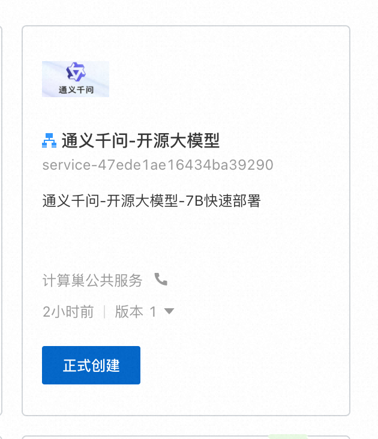
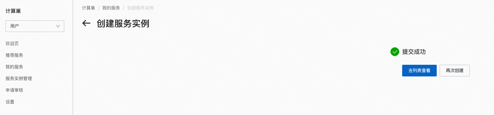
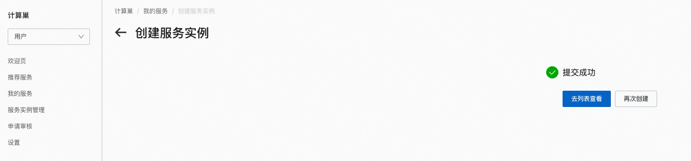
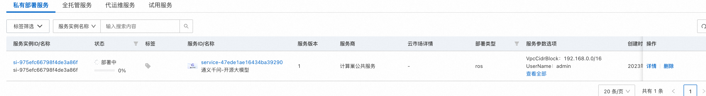
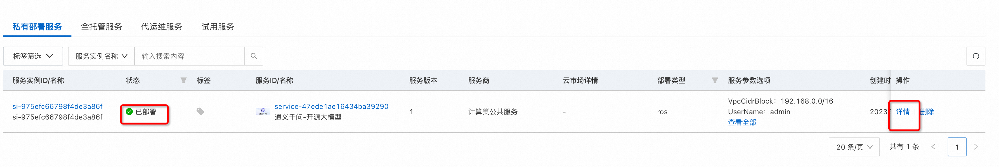
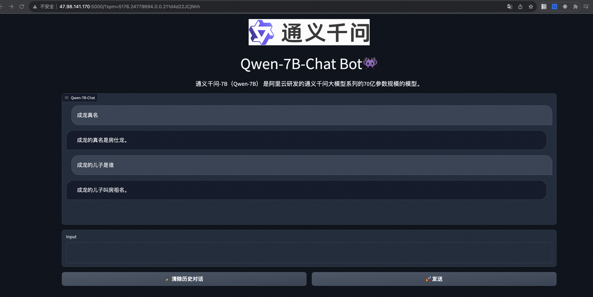

通义千问---计算巢专属部署上线啦
背景介绍
继海外开源大模型体系推出并实现商用化后，8月3日，阿里云宣布其自研的大模型通义千问正式开源，成为首个宣布大模型开源的大型中国互联网科技公司。具体来看，通义千问70亿参数的通用模型Qwen-7B和对话模型Qwen-7B-Chat，均上架在AI模型社区魔搭ModelScope，开源、免费、可商用。 8.8日，计算巢上线通义千问专属部署方案，3分钟完成一键部署体验
方案实践
-
登录阿里云计算巢控制台，进入通义千问服务创建界面，根据界面提示，模版选择gpu集群版，填写相关参数（软件登录名及登录密码很重要，后面访问WebUI需要用到），填写完成点击确认订单。


参数组 参数项 示例 说明 服务实例名称 test 实例的名称 地域 部署地域 新加坡 选中服务实例的地域，因为一些模型在国内无法下载访问，建议选择中国香港或海外地域 可用区配置 部署区域 可用区I 地域下的不同可用区域 付费类型配置 付费类型 按量付费 或 包年包月 ECS实例配置 实例类型 ecs.gn6i-c4g1.xlarge 实例规格，可以根据实际需求选择 ECS实例配置 实例密码 设置实例密码。长度8，30个字符，必须包含三项（大写字母、小写字母、数字、()`!@#$%^&*-+={}[]:;'<>,.?/ 中的特殊符号） 登录信息 软件登录名 admin 设置软件登录名，默认为admin 登录信息 软件登录名密码 设置软件登录密码 网络配置 专有网络IPv4网段 192.168.0.0/16 VPC的ip地址段范围 网络配置 交换机子网网段 192.168.0.0/24 交换机子网网段 -
勾选我已阅读并同意《计算巢服务协议》，点击"立即创建"按钮。
 
 -
查看部署进度。 点击去列表页查看，可以看到刚刚创建的服务实例以及服务部署进度。 
-
访问等待状态变为"已部署"后，点击详情，进入对应的服务实例后，可以在页面上获取Endpoint以访问服务。 
-
点击Endpoint后面的链接，输入第1步设置的软件登录名及密码。

-
完成验证后即可访问： 
总结
本文介绍了通义千问的详细功能实践，计算巢在私有化部署(cloud op）场景下提供一键部署、高效运维、弹性伸缩等功能，提供详细的报价信息、资源分组、分账展示等功能，方便客户在解决方案类场景下快速部署落地。场景合作请钉钉联系 075590
© 2009-2022 Aliyun.com 版权所有